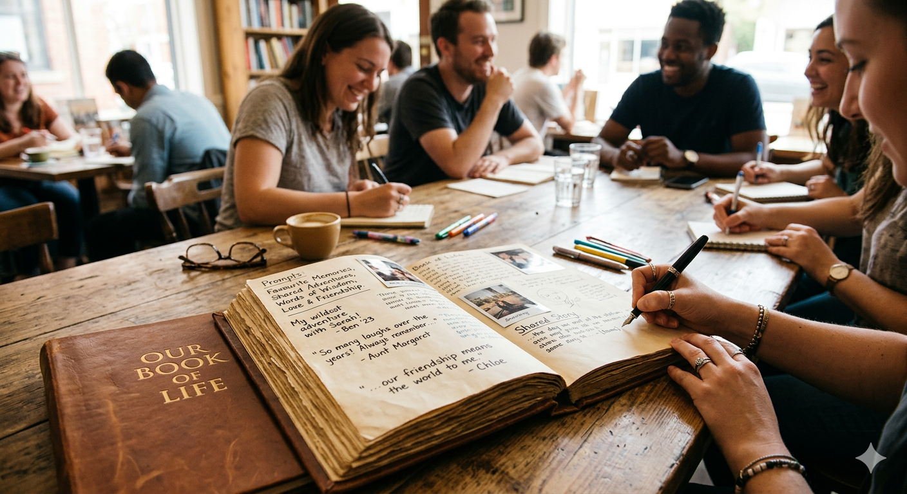
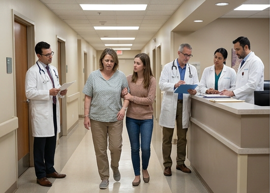
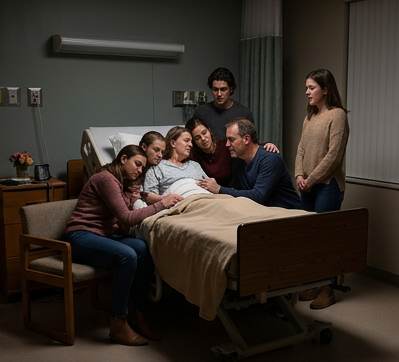
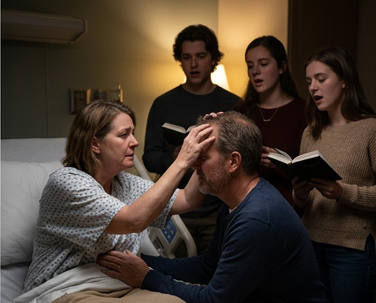
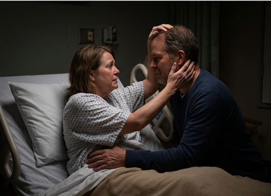
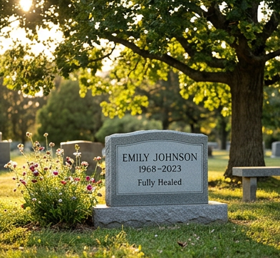

I had a friend of mine ask me to write something for his Book of Life. I had no idea what that meant, but basically you're given a prompt and then can write whatever you feel like writing. You gather multiple different people to do it, and at the end you'll have all kinds of different stories from all kinds of different people. As such, I've decided it's time I share a story that is close to my heart. I'll just copy and paste everything I wrote for his Book of Life, and I'd like to encourage you to respond to the prompt as well if you feel like it.

This one's long and emotional, so prepare yourself.
2 years ago after coming back from vacation with my family we found out my mom had cancer.Not just any kind of cancer - it was a rare, highly aggressive, and rapidly moving cancer. Despite the bad news, we believed that she would be fully healed when it was all said and done. Even so,
there was an immediate shift in all of our lives. Things went from coming home from work and her asking how my day was to coming home and seeing her cry in agony. She'd barely get any sleep, and she was on so many pain meds I couldn't even keep up with it. After 4 long months of chemo treatment, we all woke up on Thanksgiving morning with a doctor's call -
the cancer was completely gone in all of the surrounding areas. Talk about something to be thankful for on Thanksgiving! Things were finally back to normal, and I can remember saying to her that she was healed. That following Christmas will go down as the best Christmas I've ever had in my life. Fast forward 2 weeks later, she went to a routine
yearly check and found out not only was the cancer back, but it had found it's way into her bone marrow AND spinal fluid. The doctors were alarmed - it had only been 2 full months since the last scan showed she was cancer free, and now it was an alarming size AND in two different spots on her body? We couldn't believe it.

She was immediately put on a more severe treatment, and for the next 5 months she was in constant agony. She slowly lost her ability to do everything. Her vision got blurry, she lost all her strength, she lost her hair, lost her ability to both eat and drink on her own, and she couldn't be around her grandkids which she'd otherwise watch on every weekday prior to the cancer which was the hardest part for her since she absolutely loved them. It was more than heartbreaking to watch. Eventually we got report that the cancer was completely gone again, but the cancer/chemo had taken such a toll on her body that we couldn't even enjoy the news. Not long afterwards she started having stroke-like symptoms and went to the hospital several times with doctors having no clue what was going on. Eventually they were able to find out that the cancer had reached her brain. There was nothing else they could do. Every moment she was awake was painful for her, so they basically always had her on meds that'd make her fall asleep.
After 2 weeks she was moved to Hospice, and my family spent a full week with her there. It was the first time our family had all been staying together in one room in ages, and it was the last time it'd be with all of us.
The last time she spoke was late at night when it was just my dad and my siblings in the room. We had all been gathered by the bed for over an hour lightly singing worship music when she suddenly jolted up. My dad grabbed her and eased her back down, but she lifted herself back up for the first time in over 2 weeks.
She held onto my dad, and slowly grabbed his head and started to scratch it as she always used to. She told my dad how much she loved him, and he got to say his final words to her. It was an incredible moment I'll NEVER forget. Afterwards she laid back down and fell asleep, and we all stood there in amazement thankful to have had that final moment with her. She passed away 2 days later without ever fully waking up again.
Even though this all occurred in the span of 11 months, the impact it's had on my life is tremendous. Everything happened so fast I can barely even remember it all. Nowadays I live with my dad, and we are enjoying life despite the pain of loss. He's now written two books, one about her entire cancer journey, and the other about how to live beyond grief. Even though she's gone, I know she's no longer in pain. To me, she's been fully healed!This story was originally shared by a Reddit user r/stories(u/IVIaster222) . “Write about a time everything changed in a blink of an eye.” It is shared here for inspiration.
Thank you for read